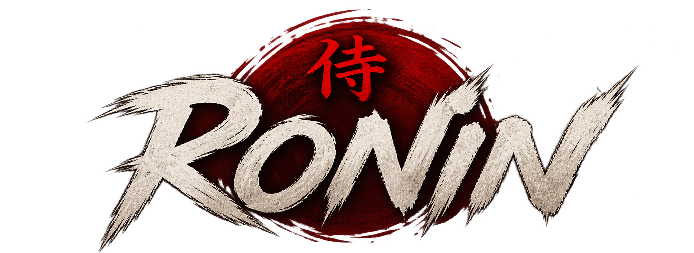
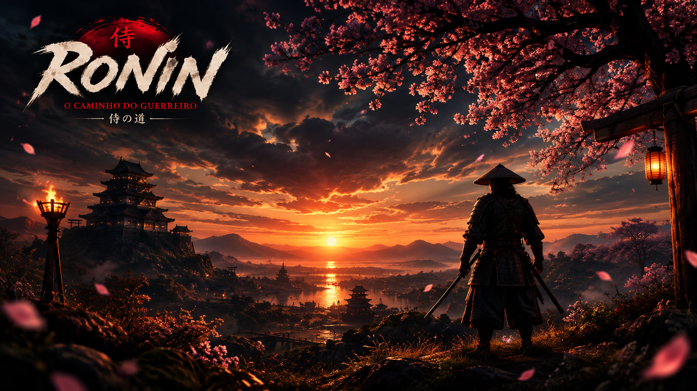

Vivencie a jornada do Ronin em cada detalhe.

Embarque em uma jornada pelo Japão Feudal, enfrente inimigos, explore diferentes ambientes e descubra os desafios do mundo de Ronin.
Confira um pouco da experiência e dos cenários presentes no jogo Ronin.
Conheça os principais elementos que fazem parte da experiência de Ronin.
Explore diferentes áreas do mapa, atravesse caminhos e descubra novos locais durante sua jornada.
Enfrente inimigos utilizando ataques com espada enquanto avança pelo mundo de Ronin.
Entre em cavernas, encontre obstáculos e explore ambientes diferentes durante sua aventura.
Enfrente adversários pelo caminho e utilize seus ataques para superar os confrontos.
Acompanhe os indicadores do personagem e tome cuidado durante os confrontos.
Descubra cenários com florestas, montanhas, cavernas e paisagens inspiradas no Japão Feudal.
Confira algumas imagens dos personagens, ambientes e dimensões do jogo.